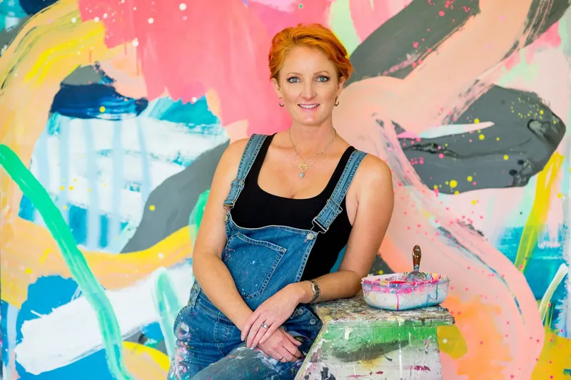
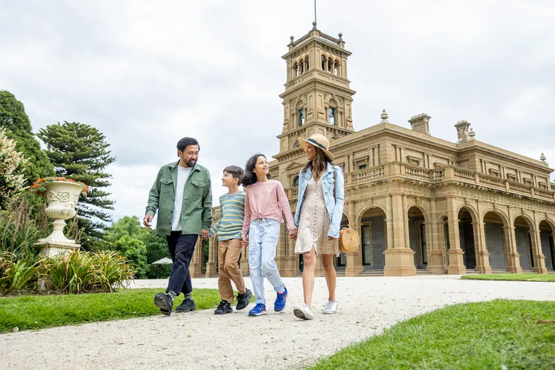
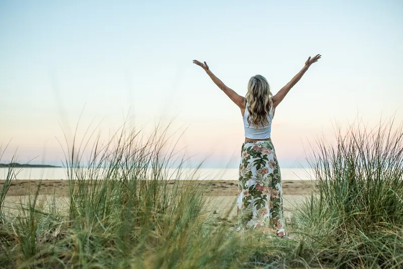
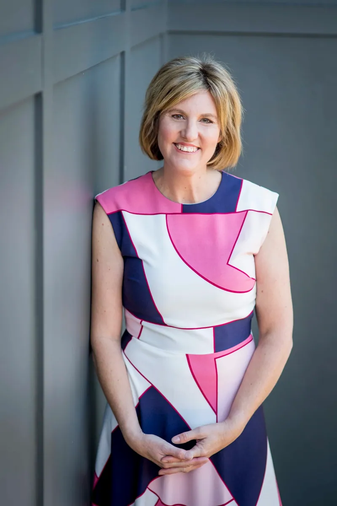

Byron Bay · Northern NSW · Gold Coast
Photography that captures the real you, in natural light
Indie Lane is the work of Donna Nugent, a branding, commercial and lifestyle photographer now based in the Byron Bay region. Relaxed sessions, vibrant colour and storytelling images your business and your family will love.
What I photograph
Sessions made for your brand and your people
Every shoot is relaxed, unhurried and built around what you actually need the images for. Here is where I can help.

Branding Portraits
Headshots and personal brand images that look like you, not a stiff corporate suit. Perfect for your website, LinkedIn and socials.

Commercial
Documentary style photography for businesses, schools and councils. People, products and spaces, captured with an artistic eye.

Editorial & Lifestyle
Storytelling image sets and relaxed lifestyle sessions full of happy faces and real moments, shot outdoors in beautiful natural light.

Food & Product
Fresh, vibrant images that make your menu and products irresistible, online and in print.

Weddings
Relaxed, candid wedding day coverage from someone who has shot over 200 weddings, real moments over stiff posing, in beautiful natural light.

Events
Natural, candid coverage that captures the feeling of the day, from launches to celebrations.

Storytelling, happy faces, vibrant colours and natural light.
— Donna Nugent, Indie Lane Photography
Brands & businesses Donna has photographed for
Portfolio
A look at recent work
Who's behind the lens
Meet Donna Nugent
I'm Donna, a photographer, people person and natural light lover with a soft spot for colour, genuine connection and the little details that bring a story to life.
With over 20 years behind the camera, I've learned that great photography is about more than how something looks. It's about how people feel, the personality behind a brand and capturing those moments that make a story worth sharing.
My work spans lifestyle portraits, branding, food, products and commercial photography. I love working with people who have a passion for what they do and want their photographs to reflect it. Whether it's showcasing a business, bringing a product to life or capturing the people behind a brand, I'm all about creating images that feel natural, vibrant and full of personality.
My background includes photographing over 200 weddings, where I learned to read a room, think on my feet and help people feel at ease. These days, that same approach carries into every shoot. I take the time to get to know you, understand your vision and create a relaxed space where you can be yourself. And if being in front of the camera feels a little uncomfortable, you're in good hands!
Originally from country Victoria, I've spent years exploring, learning and photographing people and businesses across different places. These days, I split my time between Torquay on Victoria's Surf Coast and the Byron Bay region of NSW, working with clients across both coastlines.
I love collaborating with dreamers, doers and independent businesses who care about what they put into the world. If you have a story to tell, a business to share or an idea you're ready to bring to life, I'd love to hear about it.
A photographer's style is simply how they see the world. Mine is warm light, honest colour and people who are actually enjoying themselves.
The journey so far
Three decades, told in chapters
A little glimpse into the path that brought Donna here, one chapter at a time.
A camera before a plan
Growing up in country Victoria, Donna's passion for photography began at just 14. Her favourite subjects were the horses on the family property, often turning her friends into models and developing her prints in a dusty darkroom inside a horse stable.
Chasing the light
Before settling into her career, Donna set off to explore the world. She loved people-watching in different places, noticing how natural light danced across faces and how quickly someone could relax once they felt truly seen.
Learning the craft
Donna moved to Melbourne to study photography, working in a photographic printing lab while assisting talented professional photographers and connecting with other creatives and mentors. It was a time of learning, experimenting and developing her skills.
200+ weddings, countless connections
Donna photographed over 200 weddings, refining her skills with the camera and people. She learned to put people at ease, read a room and capture the love, laughter and energy of every celebration.
From weddings to brand storytelling
A decade ago, Donna put down roots on Victoria's Surf Coast and turned that same warmth and curiosity towards brand portraits, food, products and commercial photography. She worked with businesses across the Surf Coast, Geelong and Melbourne, helping bring their people and stories to life.
Byron Bay and beyond
Today, Donna works between Torquay, Victoria, and the Byron Bay region of NSW, bringing her relaxed approach, love of natural light and eye for genuine moments to businesses across both coastlines.
Client stories
What clients actually walk away with
Not just pretty pictures. Here is the kind of transformation a session with Donna typically delivers.

From dreading the shoot to using the photos everywhere
A business owner who had avoided being on camera for years needed headshots for a new website and LinkedIn.
Donna spent the first twenty minutes just talking, no camera in sight, then shot handheld while they worked, never posed stiffly against a plain wall.
A full image set now used across the website, LinkedIn and socials, with the client saying the photos finally look like them.

Real people, real workplace, no stock-photo feel
A business needed imagery of staff and spaces for reports and web use, wary of anything that looked staged.
Donna shot documentary style across a working day, staying in the background so people forgot the camera was there.
A library of authentic images the business still pulls from for reports, recruitment and its website years later.

Turning a menu into something people want to eat
A cafe needed food photography that felt vibrant and appetite driving, not flat or clinical.
Donna shot on location in natural light, styling each dish simply so the real colour and texture led the frame.
Images used across the menu, packaging and social feed that gave the brand a noticeably more premium feel.
Why clients trust Donna
20 years of experience, a personality you can be yourself with
Over 20 years behind the camera, Donna knows how to put people at ease, bring out their natural personality and capture them as they really are, even if being in front of the camera isn't their favourite thing.
200+ weddings taught her people, first
Before brand work, Donna spent years photographing weddings, the fastest way to learn how to put a nervous stranger at ease.
A relaxed, unhurried experience
No rigid posing lists. A calm, friendly approach so even camera shy clients feel comfortable within minutes.
Real businesses, real results
Trusted by companies like Ocean Rd Consulting, Conexus Financial and QCE for imagery that actually gets used.
Two coastlines, one eye for light
Based between the Byron Bay region and the Victorian Surf Coast, with the same natural light approach wherever she shoots.
Kind words
Loved by the people in front of the lens
Sample reviews shown for layout. Donna can swap these for real client quotes any time.
I have avoided cameras my whole life. Donna is the first photographer who made me forget one was even pointed at me. The photos do not look like a "photoshoot," they look like me on a good day.Long time branding client · Byron Bay region
Donna made me feel so at ease. I usually freeze in photos, but these actually look like me.Sarah M. · Branding client
Our team headshots have never looked this good. We are already booking again next year.James T. · Business owner
Beautiful, vibrant images that captured our brand and our food perfectly.Kel R. · Cafe owner

Before you book
Questions people ask before trusting someone with their photos
I genuinely hate having my photo taken. Is that a problem?+
How experienced are you, really?+
What happens to my photos after the shoot?+
Do you only shoot in Byron Bay?+
Will the photos actually look like a "photoshoot"?+
Existing clients
Your private gallery, ready when you are
Already had a shoot with Indie Lane? Log in to view, download and share your high resolution images any time, from any device.


Book a shoot
Let's create your visual story
Tell me a little about what you need and I will get back to you within one business day with availability and pricing.
Prefer to talk? Call Donna on 0400 815 182.